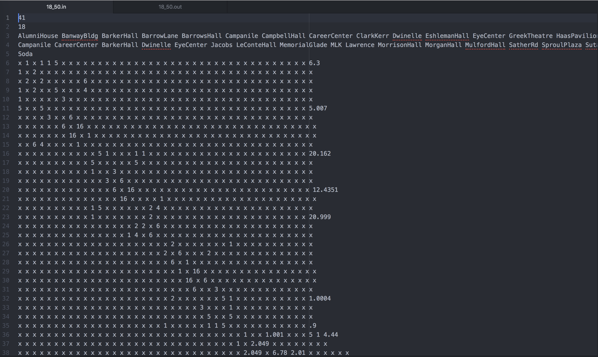
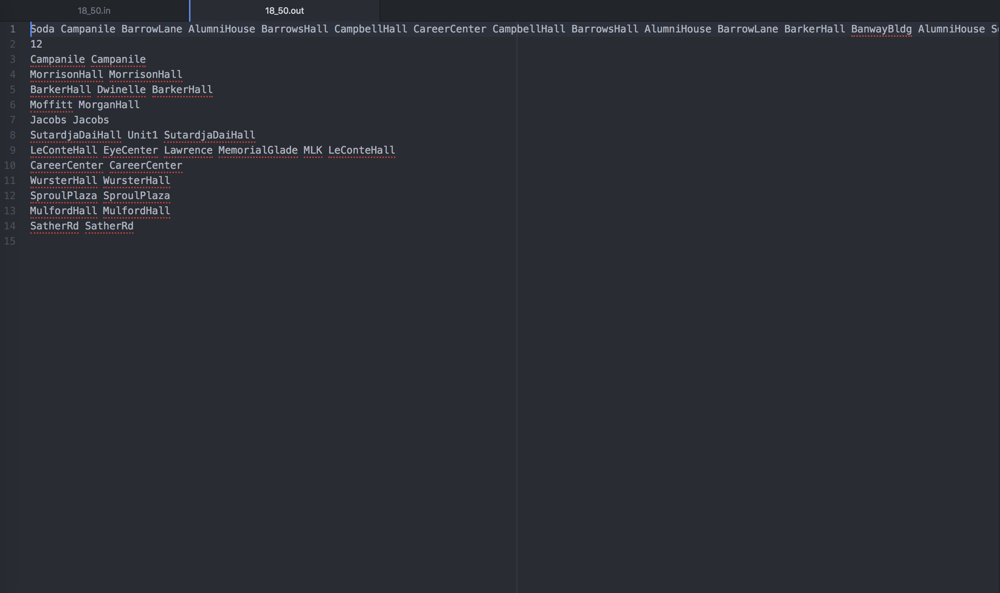

"Drive the TAs Home" - NP Hard Approximation Algorithm
UC Berkeley - Fall 2019
Overview
For my algorithms class, I worked with two classmates, Stephanie Djajadi and Nolan Pokpongkiat, to develop an approximation algorithm for the Metric Traveling Salesman problem that also takes into account solution cost. The Traveling Salesman problem (TSP) is a graph theory problem that asks the question, "Given a list of cities and the distances between each pair of cities, what is the shortest possible route that visits each city and returns to the origin city?" (Wikipedia). The premise of our project was to develop an algorithm that given a graph with different locations and houses, it would find the most efficient "driving path" through the graph for our professor to drop off the class's teaching assistants (TAs) at or near their houses with the least cost of "energy." Energy was defined as the sum of the "driving" and "walking" distances our professor and TAs would have to do to get everyone home. My team decided to use k-means clustering, Steiner Tree approximation, and depth first search to build our approximation algorithm in Python and NetworkX.
The Code
I pair programmed with Stephanie and we built a special version of k-means clustering with a unique cost function that used graph edge distances instead of traditional Euclidean distance. We used k-means clustering to cluster the houses in a given graph into "neighborhoods" where we could drop off any TAs that lived in that neighborhood at a central drop off location, the mean location of the cluster, to lessen driving cost. Nolan worked on the Steiner Tree approximation algorithm, which took all of the mean locations of each neighborhood and found the minimum spanning tree that connected all of the drop off locations with the least amount of distance connecting all of them. Stephanie and I then implemented depth first search in order to find a traversal of the Steiner tree to construct the driving path.
Example

Above is an input file for our approximation algorithm. This file holds the information for a graph with 41 nodes that represent locations. The names of the locations are on the third line, which for this graph are places in and around the UC Berkeley campus. 18 out of the 41 locations are homes where TAs live, and these homes are listed on line 4. Line 5 shows that Soda Hall (the computer science building) is the starting point of the drive. The rest of the file lists the edges, like street connections, between different locations. The first like shows that the first location, AlumniHouse, has an edge of length 1 to BanwayBldg, an edge of length 1 to BarrowLane, etc. The places with x's mean there are no connections to those locations. Our solver will read in this input file and build a graph object in NetworkX in order for us to manipulate the graph and run the rest of our algorithm.

After running our algorithm, we received back the above output file that contains our driving path. The first line of the file shows the path of locations our professor's car will drive along which is the output of the depth first search traversal on our Steiner tree approximation. The next line indicates that there are 12 locations where TAs will be dropped off, which we determined through k-means clustering. The next lines have the drop off location listed first, and then the houses of the TAs who were dropped off there are listed after. Using this output file, we can calculate our total cost of the drive by summing up how far our professor had to drive and how far the TAs had to walk to their homes if they weren't dropped off directly at their house.
Setbacks
Our algorithm's runtime was much slower than we anticipated. We had to make some last minute decisions to run simpler, but less accurate versions of our algorithm to try to lower the costs of our solutions in the last couple of hours before the deadline. Lesson learned-no matter how correct or novel you think your solution is, it won't matter if it isn't efficient! In hindsight, we should have limited the number of times we ran k-means for a given input to only a few values of k to speed up the runtime!